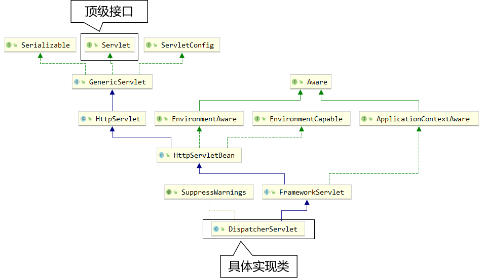
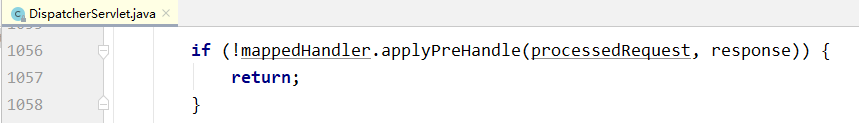
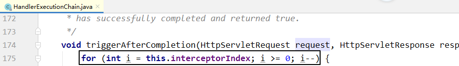

# 1、SpringMVC 简介
# 1.1、什么是 MVC
MVC 是一种软件架构的思想，将软件按照模型、视图、控制器来划分
M：Model，模型层，指工程中的 JavaBean，作用是处理数据
JavaBean 分为两类：
一类称为实体类 Bean：专门存储业务数据的，如 Student、User 等
一类称为业务处理 Bean：指 Service 或 Dao 对象，专门用于处理业务逻辑和数据访问。
V：View，视图层，指工程中的 html 或 jsp 等页面，作用是与用户进行交互，展示数据
C：Controller，控制层，指工程中的 servlet，作用是接收请求和响应浏览器
MVC 的工作流程： 用户通过视图层发送请求到服务器，在服务器中请求被 Controller 接收，Controller 调用相应的 Model 层处理请求，处理完毕将结果返回到 Controller，Controller 再根据请求处理的结果找到相应的 View 视图，渲染数据后最终响应给浏览器
# 1.2、什么是 SpringMVC
SpringMVC 是 Spring 的一个后续产品，是 Spring 的一个子项目
SpringMVC 是 Spring 为表述层开发提供的一整套完备的解决方案。在表述层框架历经 Strust、WebWork、Strust2 等诸多产品的历代更迭之后，目前业界普遍选择了 SpringMVC 作为 Java EE 项目表述层开发的首选方案。
注：三层架构分为表述层（或表示层）、业务逻辑层、数据访问层，表述层表示前台页面和后台 servlet
# 1.3、SpringMVC 的特点
- Spring 家族原生产品，与 IOC 容器等基础设施无缝对接
- 基于原生的 Servlet，通过了功能强大的前端控制器 DispatcherServlet，对请求和响应进行统一处理
- 表述层各细分领域需要解决的问题全方位覆盖，提供全面解决方案
- 代码清新简洁，大幅度提升开发效率
- 内部组件化程度高，可插拔式组件即插即用，想要什么功能配置相应组件即可
- 性能卓著，尤其适合现代大型、超大型互联网项目要求
# 2、入门案例
# 2.1、开发环境
IDE：idea 2019.2
构建工具：maven3.5.4
服务器：tomcat8.5
Spring 版本：5.3.1
thymeleaf
# 2.2、创建 maven 工程
# ①添加 web 模块
# ②打包方式：war
# ③引入依赖
<dependencies> | |
<!-- SpringMVC --> | |
<dependency> | |
<groupId>org.springframework</groupId> | |
<artifactId>spring-webmvc</artifactId> | |
<version>5.3.1</version> | |
</dependency> | |
<!-- 日志 --> | |
<dependency> | |
<groupId>ch.qos.logback</groupId> | |
<artifactId>logback-classic</artifactId> | |
<version>1.2.3</version> | |
</dependency> | |
<!-- ServletAPI --> | |
<dependency> | |
<groupId>javax.servlet</groupId> | |
<artifactId>javax.servlet-api</artifactId> | |
<version>3.1.0</version> | |
<scope>provided</scope> | |
</dependency> | |
<!-- Spring5 和 Thymeleaf 整合包 --> | |
<dependency> | |
<groupId>org.thymeleaf</groupId> | |
<artifactId>thymeleaf-spring5</artifactId> | |
<version>3.0.12.RELEASE</version> | |
</dependency> | |
</dependencies> |
注：由于 Maven 的传递性，我们不必将所有需要的包全部配置依赖，而是配置最顶端的依赖，其他靠传递性导入。
# 2.3、配置 web.xml
注册 SpringMVC 的前端控制器 DispatcherServlet
# ①默认配置方式
此配置作用下，SpringMVC 的配置文件默认位于 WEB-INF 下，默认名称为
<servlet-name>-servlet.xml，例如，以下配置所对应 SpringMVC 的配置文件位于 WEB-INF 下，文件名为 springMVC-servlet.xmlDispatcherServlet 封装了 Servlet
<!-- 配置 SpringMVC 的前端控制器，对浏览器发送的请求统一进行处理 --> | |
<servlet> | |
<!-- 名字无所谓，但是要保证 mapping 跟该名字相同 --> | |
<servlet-name>springMVC</servlet-name> | |
<servlet-class>org.springframework.web.servlet.DispatcherServlet</servlet- class> | |
</servlet> | |
<servlet-mapping> | |
<servlet-name>springMVC</servlet-name> | |
<!-- 设置 springMVC 的核心控制器所能处理的请求的请求路径 | |
/ 所匹配的请求可以是 /login 或.html 或.js 或.css 方式的请求路径 | |
但是 / 不能匹配.jsp 请求路径的请求 | |
/*：匹配浏览器向服务器发送的所有请求 (包括.jsp) | |
--> | |
<url-pattern>/</url-pattern> | |
</servlet-mapping> |
# ②扩展配置方式
可通过 init-param 标签设置 SpringMVC 配置文件的位置和名称 (即如果没有该标签，那么我们的 springMVC-servlet.xml 文件需要放在 WEB-INF 下，因为有了该文件，我们可以自己设置 xml 的文件名和路径)，通过 load-on-startup 标签设置 SpringMVC 前端控制器 DispatcherServlet 的初始化时间
<!-- 配置 SpringMVC 的前端控制器，对浏览器发送的请求统一进行处理 --> | |
<servlet> | |
<servlet-name>springMVC</servlet-name> | |
<servlet-class>org.springframework.web.servlet.DispatcherServlet</servlet- class> | |
<!-- 通过初始化参数指定 SpringMVC 配置文件的位置和名称 --> | |
<init-param> | |
<!-- contextConfigLocation 为固定值 --> | |
<param-name>contextConfigLocation</param-name> | |
<!-- 使用 classpath: 表示从类路径查找配置文件，例如 maven 工程中的 src/main/resources --> | |
<param-value>classpath:springmvc.xml</param-value> | |
</init-param> | |
<!-- | |
作为框架的核心组件，在启动过程中有大量的初始化操作要做，(看底层) | |
而这些操作放在第一次请求时才执行会严重影响访问速度 | |
因此需要通过此标签将启动控制 DispatcherServlet 的初始化时间提前到服务器启动时 | |
--> | |
<load-on-startup>1</load-on-startup> | |
</servlet> | |
<servlet-mapping> | |
<servlet-name>springMVC</servlet-name> | |
<!-- 设置 springMVC 的核心控制器所能处理的请求的请求路径 | |
/ 所匹配的请求可以是 /login 或.html 或.js 或.css 方式的请求路径 | |
但是 / 不能匹配.jsp 请求路径的请求 --> | |
<url-pattern>/</url-pattern> | |
</servlet-mapping> |
注：
<url-pattern> 标签中使用 / 和 /* 的区别：
/ 所匹配的请求可以是 /login 或.html 或.js 或.css 方式的请求路径，但是 / 不能匹配.jsp 请求路径的请求
因此就可以避免在访问 jsp 页面时，该请求被 DispatcherServlet 处理，从而找不到相应的页面
/* 则能够匹配所有请求，例如在使用过滤器时，若需要对所有请求进行过滤，
就需要使用 /* 的写法
# 2.4、创建请求控制器
由于前端控制器对浏览器发送的请求进行了统一的处理，但是具体的请求有不同的处理过程，因此需要创建处理具体请求的类，即请求控制器
请求控制器中每一个处理请求的方法成为控制器方法
因为 SpringMVC 的控制器由一个 POJO（普通的 Java 类）担任，因此需要通 @Controller 注解将其标识为一个控制层组件，交给 Spring 的 IoC 容器管理，此时 SpringMVC 才能够识别控制器的存在
@Controller | |
public class HelloController { | |
} |
# 2.5、创建 SpringMVC 的配置文件
springmvc.xml 配置文件是在 DispatcherServlet 初始化的时候加载的
springmvc.xml
<?xml version="1.0" encoding="UTF-8"?> | |
<beans xmlns="http://www.springframework.org/schema/beans" | |
xmlns:xsi="http://www.w3.org/2001/XMLSchema-instance" | |
xmlns:context="http://www.springframework.org/schema/context" | |
xmlns:mvc="http://www.springframework.org/schema/mvc" | |
xsi:schemaLocation="http://www.springframework.org/schema/beans http://www.springframework.org/schema/beans/spring-beans.xsd http://www.springframework.org/schema/context https://www.springframework.org/schema/context/spring-context.xsd http://www.springframework.org/schema/mvc https://www.springframework.org/schema/mvc/spring-mvc.xsd"> | |
<!-- 扫描控制层组件 / 自动扫描包 --> | |
<context:component-scan base-package="com.atguigu.controller"/> | |
<!-- 配置 Thymeleaf 视图解析器 --> | |
<bean id="viewResolver" class="org.thymeleaf.spring5.view.ThymeleafViewResolver"> | |
<property name="order" value="1"/> | |
<property name="characterEncoding" value="UTF-8"/> | |
<property name="templateEngine"> | |
<bean class="org.thymeleaf.spring5.SpringTemplateEngine"> | |
<property name="templateResolver"> | |
<bean class="org.thymeleaf.spring5.templateresolver.SpringResourceTemplateResolver"> | |
<!-- 即当前物理视图：/WEB-INF/templates/index.html，逻辑视图：index | |
通过配置我们只需要访问 index 即可访问到 --> | |
<!-- 视图前缀 --> | |
<property name="prefix" value="/WEB-INF/templates/"/> | |
<!-- 视图后缀 --> | |
<property name="suffix" value=".html"/> | |
<!-- 模板视图 --> | |
<property name="templateMode" value="HTML5"/> | |
<!-- 渲染视图的默认编码 --> | |
<property name="characterEncoding" value="UTF-8" /> | |
</bean> | |
</property> | |
</bean> | |
</property> | |
</bean> | |
</beans> |
# 2.6、测试 HelloWorld
# ①实现对首页的访问
在请求控制器中创建处理请求的方法
@RequestMapping("/") | |
public String protal(){ | |
// 将逻辑视图返回，即跳转到 index 页面，注意配置文件 | |
// 路径为： | |
// 前缀：/WEB-INF/templates/ | |
// 逻辑视图：index | |
// 后缀：.html | |
return "index";// 相当于 servlet 中的转发 | |
} |
# 2.7、总结
浏览器发送请求，若请求地址符合前端控制器的 url-pattern，该请求就会被前端控制器
DispatcherServlet 处理。前端控制器会读取 SpringMVC 的核心配置文件，通过扫描组件找到控制器，将请求地址和控制器中 @RequestMapping 注解的 value 属性值进行匹配，若匹配成功，该注解所标识的控制器方法就是处理请求的方法。处理请求的方法需要返回一个字符串类型的视图名称，该视图名称会被视图解析器解析，加上前缀和后缀组成视图的路径，通过 Thymeleaf 对视图进行渲染，最终转发到视图所对应页面
# 3、@RequestMapping 注解
# 3.1、@RequestMapping 注解的功能
从注解名称上我们可以看到，@RequestMapping 注解的作用就是将请求和处理请求的控制器方法关联起来，建立映射关系。
SpringMVC 接收到指定的请求，就会来找到在映射关系中对应的控制器方法来处理这个请求。
# 3.2、@RequestMapping 注解的位置
@RequestMapping 标识一个类：设置映射请求的请求路径的初始信息
@RequestMapping 标识一个方法：设置映射请求请求路径的具体信息
如果控制器方法为 void，也没有用 response.getWrite.writer () 响应浏览器数据，那么会将 @RequestMapping 的 value 作为逻辑视图来解析
@Controller | |
@RequestMapping("/test") | |
public class RequestMappingController { | |
// 此时请求映射所映射的请求的请求路径为：/test/testRequestMapping | |
@RequestMapping("/testRequestMapping") | |
public String testRequestMapping() { | |
return "success";// 相当于转发 | |
} | |
} |
# 3.3、@RequestMapping 注解的 value 属性
@RequestMapping 注解的 value 属性通过请求的请求地址 匹配 请求映射
@RequestMapping 注解的 value 属性是一个字符串类型的数组，表示该请求映射能够匹配多个请求地址所对应的请求
@RequestMapping 注解的 value 属性必须设置，至少通过请求地址匹配请求映射
<a th:href="@{/testRequestMapping}"> | |
测试@RequestMapping的value属性-- >/testRequestMapping | |
</a><br> | |
<a th:href="@{/test}"> | |
测试@RequestMapping的value属性-->/test | |
</a><br> |
@RequestMapping( | |
value = {"/testRequestMapping", "/test"} | |
) | |
public String testRequestMapping() { | |
return "success"; | |
} |
# 3.4、@RequestMapping 注解的 method 属性
@RequestMapping 注解的 method 属性通过请求的请求方式（get 或 post）匹配请求映射
@RequestMapping 注解的 method 属性是一个 RequestMethod 类型的数组，表示该请求映射能够匹配多种请求方式的请求
若当前请求的请求地址满足请求映射的 value 属性，但是请求方式不满足 method 属性，则浏览器报错 405：Request method 'POST' not supported
<a th:href="@{/test}"> | |
测试@RequestMapping的value属性-->/test | |
</a><br> | |
<form th:action="@{/test}" method="post"> | |
<input type="submit"> | |
</form> |
@RequestMapping( | |
value = {"/testRequestMapping", "/test"}, | |
method = {RequestMethod.GET, RequestMethod.POST} | |
) | |
public String testRequestMapping() { | |
return "success"; | |
} |
注：
1、对于处理指定请求方式的控制器方法，SpringMVC 中提供了 @RequestMapping 的派生注解
处理 get 请求的映射 -->@GetMapping
处理 post 请求的映射 -->@PostMapping
处理 put 请求的映射 -->@PutMapping
处理 delete 请求的映射 -->@DeleteMapping
2、常用的请求方式有 get，post，put，delete
但是目前浏览器只支持 get 和 post，若在 form 表单提交时，为 method 设置了其他请求方式的字符串（put 或 delete），则按照默认的请求方式 get 处理
若要发送 put 和 delete 请求，则需要通过 spring 提供的过滤 HiddenHttpMethodFilter，在 RESTful 部分会讲到
# 3.5、@RequestMapping 注解的 params 属性（了解）
@RequestMapping 注解的 params 属性通过请求的请求参数匹配请求映射
@RequestMapping 注解的 params 属性是一个字符串类型的数组，可以通过四种表达式设置请求参数和请求映射的匹配关系
- "param"：表示当前所匹配请求的请求参数中必须携带 param 参数
- "!param"：表示当前所匹配请求的请求参数中一定不能携带 param 参数
- "param=value"：表示当前所匹配请求的请求参数中必须携带 param 参数且值必须为 value
- "param!=value"：表示当前所匹配请求的请求参数中可以不携带 param，若携带值一定不能是 value
<a th:href="@{/test(username='admin',password=123456)"> | |
测试@RequestMapping的 params属性-->/test | |
</a><br> |
@RequestMapping( | |
value = {"/testRequestMapping", "/test"}, | |
method = {RequestMethod.GET, RequestMethod.POST}, | |
params = {"username", "password!=123456"} | |
) | |
public String testRequestMapping() { | |
return "success"; | |
} |
注：
若当前请求满足 @RequestMapping 注解的 value 和 method 属性，但是不满足 params 属性，此时
页面会报错 400：Parameter conditions "username, password!=123456" not met for actualrequest parameters: username={admin}, password=
# 3.6、@RequestMapping 注解的 headers 属性（了解）
@RequestMapping 注解的 headers 属性通过请求的请求头信息匹配请求映射
@RequestMapping 注解的 headers 属性是一个字符串类型的数组，可以通过四种表达式设置请求头信息和请求映射的匹配关系
"header"：要求请求映射所匹配的请求必须携带 header 请求头信息
"!header"：要求请求映射所匹配的请求必须不能携带 header 请求头信息
"header=value"：要求请求映射所匹配的请求必须携带 header 请求头信息 header=value
"header!=value"：要求请求映射所匹配的请求必须携带 header 请求头信息且 header!=value
若当前请求满足 @RequestMapping 注解的 value 和 method 属性，但是不满足 headers 属性，此时页面显示 404 错误，即资源未找到
用法同上 params
# 3.7、SpringMVC 支持 ant 风格的路径
在@RequestMapping注解的value属性值中设置一些特殊字符 | |
?:任意的单个字符（不包括?） | |
*:任意个数的任意字符（不包括?和/） | |
**:任意层数的任意目录，注意使用方式只能**写在双斜线中，前后不能有任何的其他字符 |
//@RequestMapping("/ab?d/test/ant") | |
//@RequestMapping("/ab*d/test/ant") | |
@RequestMapping("/**/test/ant") | |
public String testAnt(){ | |
return "success"; | |
} |
<a th:href="@{/abcd/test/ant}"> | |
测试@RequestMapping注解支持ant风格的路径 ? | |
</a><br> | |
<a th:href="@{/abcswegwd/test/ant}"> | |
测试@RequestMapping注解支持ant风格的路径 * | |
</a><br> | |
<a th:href="@{/adsbs/test/ant}"> | |
测试@RequestMapping注解支持ant风格的路径 ** | |
</a><br> |
# 3.8、SpringMVC 支持路径中的占位符（重点）
原始方式：/deleteUser?id=1
rest 方式：/user/delete/1
SpringMVC 路径中的占位符常用于 RESTful 风格中，当请求路径中将某些数据通过路径的方式传输到服务器中，就可以在相应的 @RequestMapping 注解的 value 属性中通过占位符 {xxx} 表示传输的数据，在通过 @PathVariable 注解，将占位符所表示的数据赋值给控制器方法的形参
<a th:href="@{/test/rest/admin/1}"> | |
测试@RequestMapping注解的value属性中的占位符 | |
</a> |
@RequestMapping("/test/rest/{username}/{id}") | |
public String testRest(@PathVariable("id") Integer id, @PathVariable("username") String username){ | |
System.out.println("id:"+id+",username:"+username); | |
return "success"; | |
} | |
// 最终输出的内容为 -->id:1,username:admin |
# 4、SpringMVC 获取请求参数
# 4.1、通过 ServletAPI 获取
只需要在控制器方法的形参位置设置 HttpServletRequest 类型的形参就可以在控制器方法中使用 request 对象获取请求参数
<form th:action="@{/param/pojo}" method="post"> | |
用户名：<input type="text" name="username"><br> | |
密码：<input type="password" name="password"><br> | |
<input type="submit" value="登录"><br> | |
</form> |
@RequestMapping("/param/servletAPI") | |
public String getParamByServletAPI(HttpServletRequest request){ | |
String username = request.getParameter("username"); | |
String password = request.getParameter("password"); | |
System.out.println("username:"+username+",password:"+password); | |
return "success"; | |
} |
# 4.2、通过控制器方法的形参获取请求参数
通过控制器方法的形参获取
只需要在控制器方法的形参位置，设置一个形参，形参的名字和请求参数的名字一致即可
@RequestMapping("/param/servletAPI") | |
public String getParamByServletAPI(String username, String password){ | |
System.out.println("username:"+username+",password:"+password); | |
return "success"; | |
} |
注：
若请求所传输的请求参数中有多个同名的请求参数，此时可以在控制器方法的形参中设置字符串数组或者字符串类型的形参接收此请求参数
若使用字符串数组类型的形参，此参数的数组中包含了每一个数据
若使用字符串类型的形参，此参数的值为每个数据中间使用逗号拼接的结果
# 4.3、@RequestParam
@RequestParam 是将请求参数和控制器方法的形参创建映射关系
@RequestParam 注解一共有三个属性：
value：指定为形参赋值的请求参数的参数名
required：设置是否必须传输此请求参数，默认值为 true
- 若设置为 true 时，则当前请求必须传输 value 所指定的请求参数，若没有传输该请求参数，且没有设置 defaultValue 属性，则页面报错 400：Required String parameter 'xxx' is not present；
- 若设置为 false，则当前请求不是必须传输 value 所指定的请求参数，若没有传输，则注解所标识的形参的值为 null
defaultValue：不管 required 属性值为 true 或 false，当 value 所指定的请求参数没有传输或传输的值为 "" 时，则使用默认值为形参赋值
@RequestMapping("/param") | |
public String getParam( | |
@RequestParam(value = "userName", required = true, defaultValue = "hello") String username, | |
String password | |
){ | |
System.out.println("jsessionId:"+jsessionId); | |
System.out.println("referer:"+referer); | |
System.out.println("username:"+username+",password:"+password); | |
return "success"; | |
} |
# 4.4、@RequestHeader
@RequestHeader 是将请求头信息和控制器方法的形参创建映射关系
@RequestHeader 注解一共有三个属性：value、required、defaultValue，用法同 @RequestParam
# 4.5、@CookieValue
@CookieValue 是将 cookie 数据和控制器方法的形参创建映射关系
@CookieValue 注解一共有三个属性：value、required、defaultValue，用法同 @RequestParam
# 4.6、通过 POJO 获取请求参数
通过控制器方法的实体类类型的形参获取请求参数需要在控制器方法的形参位置设置实体类类型的形参，要保证实体类中的属性的属性名和请求参数的名字一致可以通过实体类类型的形参获取请求参数
@RequestMapping("/param/pojo") | |
public String getParamByPojo(User user){ | |
System.out.println(user); | |
return "success"; | |
} |
# 4.7、解决获取请求参数的乱码问题
get 乱码：修改 tomcat 配置文件添加编码与工程编码一致，对参数进行重新编码，如图
conf/server.xml 中进行修改
post 请求乱码：可以使用 SpringMVC 提供的编码过滤器 CharacterEncodingFilter，但是必须在 web.xml 中进行注册
<filter> | |
<filter-name>CharacterEncodingFilter</filter-name> | |
<filter-class>org.springframework.web.filter.CharacterEncodingFilter</filter-class> | |
<init-param> | |
<param-name>encoding</param-name> | |
<param-value>UTF-8</param-value> | |
</init-param> | |
<init-param> | |
<param-name>forceEncoding</param-name> | |
<param-value>true</param-value> | |
</init-param> | |
</filter> | |
<filter-mapping> | |
<filter-name>CharacterEncodingFilter</filter-name> | |
<url-pattern>/*</url-pattern> | |
</filter-mapping> |
注：
如果只设置 encoding，那么当前只会设置请求的编码 request.setCharacterEncoding (UTF-8）
如果还设置了 forceEncoding，那么不但会设置请求的编码，还会设置响应的编码 response.setCharacterEncoding (UTF-8)
SpringMVC 中处理编码的过滤器一定要配置到其他过滤器之前，否则无效
# 5、域对象共享数据
# 5.1、使用 ServletAPI 向 request 域对象共享数据
@RequestMapping("/testServletAPI") | |
public String testServletAPI(HttpServletRequest request) { | |
request.setAttribute("testScope", "hello,servletAPI"); | |
return "success"; | |
} |
# 5.2、使用 ModelAndView 向 request 域对象共享数据（推荐）
使用 ModelAndView 时，可以使用其 Model 功能向请求域共享数据
使用 View 功能设置逻辑视图，但是控制器方法一定要将 ModelAndView 作为方法的返回值
@RequestMapping("/test/mav") | |
public ModelAndView testMAV(){ | |
/** | |
* ModelAndView 包含 Model 和 View 的功能 | |
* Model：向请求域中共享数据 | |
* View：设置逻辑视图实现页面跳转 | |
*/ | |
ModelAndView mav = new ModelAndView(); | |
// 向请求域中共享数据 | |
mav.addObject("testRequestScope", "hello,ModelAndView"); | |
// 设置逻辑视图 | |
mav.setViewName("success"); | |
return mav; | |
} |
# 5.3、使用 Model 向 request 域对象共享数据
@RequestMapping("/test/model") | |
public String testModel(Model model){ | |
//org.springframework.validation.support.BindingAwareModelMap | |
System.out.println(model.getClass().getName()); | |
model.addAttribute("testRequestScope", "hello,Model"); | |
return "success"; | |
} |
# 5.4、使用 map 向 request 域对象共享数据
@RequestMapping("/test/map") | |
public String testMap(Map<String, Object> map){ | |
//org.springframework.validation.support.BindingAwareModelMap | |
System.out.println(map.getClass().getName()); | |
map.put("testRequestScope", "hello,map"); | |
return "success"; | |
} |
# 5.5、使用 ModelMap 向 request 域对象共享数据
@RequestMapping("/test/modelMap") | |
public String testModelMap(ModelMap modelMap){ | |
//org.springframework.validation.support.BindingAwareModelMap | |
System.out.println(modelMap.getClass().getName()); | |
modelMap.addAttribute("testRequestScope", "hello,ModelMap"); | |
return "success"; | |
} |
# 5.6、Model、ModelMap、Map 的关系
- 其实在底层中，这些类型的形参最终都是通过 BindingAwareModelMap 创建
- public class BindingAwareModelMap extends ExtendedModelMap {}
- public class ExtendedModelMap extends ModelMap implements Model {}
- public class ModelMap extends LinkedHashMap<String, Object> {}
# 5.7、向 session 域共享数据
@RequestMapping("/test/session") | |
public String testSession(HttpSession session){ | |
session.setAttribute("testSessionScope", "hello,session"); | |
return "success"; | |
} |
# 5.8、向 application 域共享数据
@RequestMapping("/test/application") | |
public String testApplication(HttpSession session){ | |
ServletContext servletContext = session.getServletContext(); | |
servletContext.setAttribute("testApplicationScope", "hello,application"); | |
return "success"; | |
} |
# 6、SpringMVC 的视图
SpringMVC 中的视图是 View 接口，视图的作用渲染数据，将模型 Model 中的数据展示给用户
SpringMVC 视图的种类很多，默认有转发视图和重定向视图
当工程引入 jstl 的依赖，转发视图会自动转换为 JstlView
若使用的视图技术为 Thymeleaf，在 SpringMVC 的配置文件中配置了 Thymeleaf 的视图解析器，由此视图解析器解析之后所得到的是 ThymeleafView
# 6.1、ThymeleafView
当控制器方法中所设置的视图名称没有任何前缀时，此时的视图名称会被 SpringMVC 配置文件中所配置的视图解析器解析，视图名称拼接视图前缀和视图
后缀所得到的最终路径，会通过转发的方式实现跳转
@RequestMapping("/testHello") | |
public String testThymeleafView(){ | |
return "hello"; | |
} |

# 6.2、转发视图
SpringMVC 中默认的转发视图是 InternalResourceView
SpringMVC 中创建转发视图的情况：
当控制器方法中所设置的视图名称以 "forward:" 为前缀时，创建 InternalResourceView 视图，此时的视图名称不会被 SpringMVC 配置文件中所配置的视图解析器解析，(即就无法对 ThymeleafView 语法进行解析) 而是会将前缀 "forward:" 去掉，剩余部分作为最终路径通过转发的方式实现跳转
例如 "forward:/"，"forward:/employee"
@RequestMapping("/testForward") | |
public String testInternalResourceView(){ | |
return "forward:/testHello"; | |
} |

# 6.3、重定向视图
当控制器方法中所设置的视图名称以 "redirect:" 为前缀时，创建 RedirectView 视图，此时的视图名称不会被 SpringMVC 配置文件中所配置的视图解析器解析，而是会将前缀 "redirect:" 去掉，剩余部分作为最终路径通过重定向的方式实现跳转
例如 "redirect:/"，"redirect:/employee"
@RequestMapping("/test/view/redirect") | |
public String testRedirectView(){ | |
return "redirect:/testHello"; | |
} |

注：
重定向视图在解析时，会先将 redirect: 前缀去掉，然后会判断剩余部分是否以 / 开头，若是则会自动拼接上下文路径
# 6.4、视图控制器 view-controller
当控制器方法中，仅仅用来实现页面跳转，即只需要设置视图名称时，可以将处理器方法使用 view-controller 标签进行表示
<!-- | |
path：设置处理的请求地址 | |
view-name：设置请求地址所对应的视图名称 | |
--> | |
<mvc:view-controller path="/testView" view-name="success"/> |
注：
当 SpringMVC 中设置任何一个 view-controller 时，其他控制器中的请求映射将全部失效，此时需要在 SpringMVC 的核心配置文件中设置开启 mvc 注解驱动的标签：
<mvc:annotation-driven />
如上相当于
// 帮助跳转的页面，即打开服务器就跳转到 testView 页面，前提不能有 index.jsp | |
@RequestMapping("/") | |
public String testRedirectView(){ | |
return "testView"; | |
} |
# 7、RESTful
# 7.1、RESTful 简介
REST：Representational State Transfer，表现层资源状态转移。
# ①资源
资源是一种看待服务器的方式，即，将服务器看作是由很多离散的资源组成。每个资源是服务器上一个可命名的抽象概念。因为资源是一个抽象的概念，所以它不仅仅能代表服务器文件系统中的一个文件、数据库中的一张表等等具体的东西，可以将资源设计的要多抽象有多抽象，只要想象力允许而且客户端应用开发者能够理解。与面向对象设计类似，资源是以名词为核心来组织的，首先关注的是名词。一个资源可以由一个或多个 URI 来标识。URI 既是资源的名称，也是资源在 Web 上的地址。对某个资源感兴趣的客户端应用，可以通过资源的 URI 与其进行交互。
即 java 中万物皆可对象，RESTful 是万物皆可资源
# ②资源的表述
资源的表述是一段对于资源在某个特定时刻的状态的描述。可以在客户端 - 服务器端之间转移（交换）。资源的表述可以有多种格式，例如 HTML/XML/JSON/ 纯文本 / 图片 / 视频 / 音频等等。资源的表述格式可以通过协商机制来确定。请求 - 响应方向的表述通常使用不同的格式。
# ③状态转移
状态转移说的是：在客户端和服务器端之间转移（transfer）代表资源状态的表述。通过转移和操作资源的表述，来间接实现操作资源的目的。
# 7.2、RESTful 的实现
具体说，就是 HTTP 协议里面，四个表示操作方式的动词：GET、POST、PUT、DELETE。
它们分别对应四种基本操作：GET 用来获取资源，POST 用来新建资源，PUT 用来更新资源，DELETE 用来删除资源。
REST 风格提倡 URL 地址使用统一的风格设计，从前到后各个单词使用斜杠分开，不使用问号键值对方式携带请求参数，而是将要发送给服务器的数据作为 URL 地址的一部分，以保证整体风格的一致性。
| 操作 | 传统方式 | REST 风格 |
|---|---|---|
| 查询操作 | getUserById?id=1 | user/1-->get 请求方式 |
| 保存操作 | saveUser | user-->post 请求方式 |
| 删除操作 | deleteUser?id=1 | user/1-->delete 请求方式 |
| 更新操作 | updateUser | user-->put 请求方式 |
# 7.3、HiddenHttpMethodFilter
由于浏览器只支持发送 get 和 post 方式的请求，那么该如何发送 put 和 delete 请求呢？
SpringMVC 提供了 HiddenHttpMethodFilter 帮助我们将 POST 请求转换为 DELETE 或 PUT 请求
HiddenHttpMethodFilter 处理 put 和 delete 请求的条件：
a > 当前请求的请求方式必须为 post
b > 当前请求必须传输请求参数_method
满足以上条件， HiddenHttpMethodFilter 过滤器就会将当前请求的请求方式转换为请求参数 _method 的值，因此请求参数 _method 的值才是最终的请求方式
在 web.xml 中注册 HiddenHttpMethodFilter
<!-- 设置处理请求方式的过滤器 --> | |
<filter> | |
<filter-name>HiddenHttpMethodFilter</filter-name> | |
<filter-class>org.springframework.web.filter.HiddenHttpMethodFilter</filter-class> | |
</filter> | |
<filter-mapping> | |
<filter-name>HiddenHttpMethodFilter</filter-name> | |
<url-pattern>/*</url-pattern> | |
</filter-mapping> |
注：
目前为止，SpringMVC 中提供了两个过滤器：CharacterEncodingFilter 和 HiddenHttpMethodFilter
在 web.xml 中注册时，必须先注册 CharacterEncodingFilter，再注册 HiddenHttpMethodFilter
原因：
- 在 CharacterEncodingFilter 中通过 request.setCharacterEncoding (encoding) 方法设置字符集的
- request.setCharacterEncoding (encoding) 方法要求前面不能有任何获取请求参数的操作
- 而 HiddenHttpMethodFilter 恰恰有一个获取请求方式的操作：
String paramValue = request.getParameter(this.methodParam); |
# 7.4、测试
<!DOCTYPE html> | |
<html lang="en" xmlns:th="http://www.thymeleaf.org"> | |
<head> | |
<meta charset="UTF-8"> | |
<title>首页</title> | |
</head> | |
<body> | |
<h1>index.html</h1> | |
<a th:href="@{/user}">查询所有的用户信息</a><br> | |
<a th:href="@{/user/1}">查询id为1的用户信息</a><br> | |
<form th:action="@{/user}" method="post"> | |
<input type="submit" value="添加用户信息"> | |
</form> | |
<form th:action="@{/user}" method="post"> | |
<input type="hidden" name="_method" value="put"> | |
<input type="submit" value="修改用户信息"> | |
</form> | |
<form th:action="@{/user/5}" method="post"> | |
<input type="hidden" name="_method" value="delete"> | |
<input type="submit" value="删除用户信息"> | |
</form> | |
<hr> | |
<a th:href="@{/employee}">查询所有的员工信息</a> | |
</body> | |
</html> |
@Controller | |
public class TestRestController { | |
//@RequestMapping(value = "/user", method = RequestMethod.GET) | |
@GetMapping("/user") | |
public String getAllUser(){ | |
System.out.println("查询所有的用户信息-->/user-->get"); | |
return "success"; | |
} | |
//@RequestMapping(value = "/user/{id}", method = RequestMethod.GET) | |
@GetMapping("/user/{id}") | |
public String getUserById(@PathVariable("id") Integer id){ | |
System.out.println("根据id查询用户信息-->/user/"+id+"-->get"); | |
return "success"; | |
} | |
//@RequestMapping(value = "/user", method = RequestMethod.POST) | |
@PostMapping("/user") | |
public String insertUser(){ | |
System.out.println("添加用户信息-->/user-->post"); | |
return "success"; | |
} | |
//@RequestMapping(value = "/user", method = RequestMethod.PUT) | |
@PutMapping("/user") | |
public String updateUser(){ | |
System.out.println("修改用户信息-->/user-->put"); | |
return "success"; | |
} | |
//@RequestMapping(value = "/user/{id}", method = RequestMethod.DELETE) | |
@DeleteMapping("/user/{id}") | |
public String deleteUser(@PathVariable("id") Integer id){ | |
System.out.println("删除用户信息-->/user/"+id+"-->delete"); | |
return "success"; | |
} | |
} |
# 8、RESTful 案例
# 8.1、准备工作
和传统 CRUD 一样，实现对员工信息的增删改查。
# 搭建环境
# 准备实体类
package com.atguigu.pojo; | |
/** | |
* Date:2022/7/8 | |
* Author:ybc | |
* Description: | |
*/ | |
public class Employee { | |
private Integer id; | |
private String lastName; | |
private String email; | |
//1 male, 0 female | |
private Integer gender; | |
public Integer getId() { | |
return id; | |
} | |
public void setId(Integer id) { | |
this.id = id; | |
} | |
public String getLastName() { | |
return lastName; | |
} | |
public void setLastName(String lastName) { | |
this.lastName = lastName; | |
} | |
public String getEmail() { | |
return email; | |
} | |
public void setEmail(String email) { | |
this.email = email; | |
} | |
public Integer getGender() { | |
return gender; | |
} | |
public void setGender(Integer gender) { | |
this.gender = gender; | |
} | |
public Employee(Integer id, String lastName, String email, Integer gender) { | |
super(); | |
this.id = id; | |
this.lastName = lastName; | |
this.email = email; | |
this.gender = gender; | |
} | |
public Employee() { | |
} | |
} |
# 准备 dao 模拟数据
package com.atguigu.dao; | |
import com.atguigu.pojo.Employee; | |
import org.springframework.stereotype.Repository; | |
import java.util.Collection; | |
import java.util.HashMap; | |
import java.util.Map; | |
/** | |
* Date:2022/7/8 | |
* Author:ybc | |
* Description: | |
*/ | |
@Repository | |
public class EmployeeDao { | |
private static Map<Integer, Employee> employees = null; | |
static{ | |
employees = new HashMap<Integer, Employee>(); | |
employees.put(1001, new Employee(1001, "E-AA", "aa@163.com", 1)); | |
employees.put(1002, new Employee(1002, "E-BB", "bb@163.com", 1)); | |
employees.put(1003, new Employee(1003, "E-CC", "cc@163.com", 0)); | |
employees.put(1004, new Employee(1004, "E-DD", "dd@163.com", 0)); | |
employees.put(1005, new Employee(1005, "E-EE", "ee@163.com", 1)); | |
} | |
private static Integer initId = 1006; | |
public void save(Employee employee){ | |
if(employee.getId() == null){ | |
employee.setId(initId++); | |
} | |
employees.put(employee.getId(), employee); | |
} | |
public Collection<Employee> getAll(){ | |
return employees.values(); | |
} | |
public Employee get(Integer id){ | |
return employees.get(id); | |
} | |
public void delete(Integer id){ | |
employees.remove(id); | |
} | |
} |
# 创建 Controller 层
package com.atguigu.controller; | |
@Controller | |
public class EmployeeController { | |
@Autowired | |
private EmployeeDao employeeDao; | |
} |
# 8.2、功能清单
| 功能 | URL 地址 | 请求方式 |
|---|---|---|
| 访问首页√ | / | GET |
| 查询全部数据√ | /employee | GET |
| 删除√ | /employee/2 | DELETE |
| 跳转到添加数据页面√ | /toAdd | GET |
| 执行保存√ | /employee | POST |
| 跳转到更新数据页面√ | /employee/2 | GET |
| 执行更新√ | /employee | PUT |
# 8.3、具体功能：访问首页
# ①配置 view-controller
<mvc:view-controller path="/" view-name="index"/> |
# ②创建页面
<!DOCTYPE html> | |
<html lang="en" xmlns:th="http://www.thymeleaf.org"> | |
<head> | |
<meta charset="UTF-8"> | |
<title>首页</title> | |
</head> | |
<body> | |
<h1>index.html</h1> | |
<a th:href="@{/employee}">查询所有的员工信息</a> | |
</body> | |
</html> |
# 8.4、具体功能：查询所有员工数据
# ①控制器方法
@RequestMapping(value = "/employee", method = RequestMethod.GET) | |
public String getAllEmployee(Model model){ | |
// 获取所有的员工信息 | |
Collection<Employee> allEmployee = employeeDao.getAll(); | |
// 将所有的员工信息在请求域中共享 | |
model.addAttribute("allEmployee", allEmployee); | |
// 跳转到列表页面 | |
return "employee_list"; | |
} |
# ②创建 employee_list.html
<!DOCTYPE html> | |
<html lang="en" xmlns:th="http://www.thymeleaf.org"> | |
<head> | |
<meta charset="UTF-8"> | |
<title>employee list</title> | |
<link rel="stylesheet" th:href="@{/static/css/index_work.css}"> | |
</head> | |
<body> | |
<div id="app"> | |
<table> | |
<tr> | |
<th colspan="5">employee list</th> | |
</tr> | |
<tr> | |
<th>id</th> | |
<th>lastName</th> | |
<th>email</th> | |
<th>gender</th> | |
<th>options（<a th:href="@{/to/add}">add</a>）</th> | |
</tr> | |
<tr th:each="employee : ${allEmployee}"> | |
<td th:text="${employee.id}"></td> | |
<td th:text="${employee.lastName}"></td> | |
<td th:text="${employee.email}"></td> | |
<td th:text="${employee.gender}"></td> | |
<td> | |
<a @click="deleteEmployee()" th:href="@{'/employee/'+${employee.id}}">delete</a> | |
<a th:href="@{'/employee/'+${employee.id}}">update</a> | |
</td> | |
</tr> | |
</table> | |
</div> | |
</body> | |
</html> |
# 效果
# 加上样式 & 处理静态资源
为什么会访问不到？404
因为我们在 web.xml 配置了 DispatcherServlet，它会处理所有从浏览器向服务器发送的请求，所以我们当前访问 css 的请求也会被 DispatcherServlet 进行处理
DispatcherServlet 是怎么进行处理请求的
在 Controller 层编写一个请求映射 (即 @RequestMapping), 然后保证 value 值跟所要处理的请求的路径一致，然后就可以通过该方法处理请求
为什么处理不了？
因为我们 web.xml 跟 tomcat 中处理静态资源的配置发生了冲突 (我们当前的 web.xml 可以理解为继承了 tomcat 中的 web.xml)，因此默认使用 web.xml 中的配置，但是 DispatcherServlet 无法处理静态资源
解决方法：配置默认的 servlet 处理静态资源
<!-- | |
配置默认的 servlet 处理静态资源 | |
当前工程的 web.xml 配置的前端控制器 DispatcherServlet 的 url-pattern 是 / | |
tomcat 的 web.xml 配置的 DefaultServlet 的 url-pattern 也是 / | |
此时，浏览器发送的请求会优先被 DispatcherServlet 进行处理，但是 DispatcherServlet 无法处理静态资源 | |
若配置了 & lt;mvc:default-servlet-handler />，此时浏览器发送的所有请求都会被 DefaultServlet 处理 | |
若配置了 & lt;mvc:default-servlet-handler /> 和 & lt;mvc:annotation-driven /> | |
浏览器发送的请求会先被 DispatcherServlet 处理，无法处理在交给 DefaultServlet 处理 | |
--> | |
<!-- 配置默认的 servlet 处理静态资源 --> | |
<mvc:default-servlet-handler /> | |
<!-- 开启 mvc 的注解驱动 --> | |
<mvc:annotation-driven /> |
效果
# 8.5、具体功能：添加功能
在查询所有页面添加一个添加的超链接
# ①配置 view-controller
<mvc:view-controller path="/toAdd" view-name="employee_add"/> |
注：
可以配置多个 view-controller
# ②创建 employee_add.html
<!DOCTYPE html> | |
<html lang="en" xmlns:th="http://www.thymeleaf.org"> | |
<head> | |
<meta charset="UTF-8"> | |
<title>add employee</title> | |
<link rel="stylesheet" th:href="@{/static/css/index_work.css}"> | |
</head> | |
<body> | |
<form th:action="@{/employee}" method="post"> | |
<table> | |
<tr> | |
<th colspan="2">add employee</th> | |
</tr> | |
<tr> | |
<td>lastName</td> | |
<td> | |
<input type="text" name="lastName"> | |
</td> | |
</tr> | |
<tr> | |
<td>email</td> | |
<td> | |
<input type="text" name="email"> | |
</td> | |
</tr> | |
<tr> | |
<td>gender</td> | |
<td> | |
<input type="radio" name="gender" value="1">male | |
<input type="radio" name="gender" value="0">female | |
</td> | |
</tr> | |
<tr> | |
<td colspan="2"> | |
<input type="submit" value="add"> | |
</td> | |
</tr> | |
</table> | |
</form> | |
</body> | |
</html> |
# 控制器方法
@RequestMapping(value = "/employee", method = RequestMethod.POST) | |
public String addEmployee(Employee employee){ | |
// 保存员工信息 | |
employeeDao.save(employee); | |
// 重定向到列表功能：/employee | |
return "redirect:/employee"; | |
} |
# 效果

# 8.6、具体功能：修改
# ①修改超链接
<a th:href="@{'/employee/'+${employee.id}}">update</a> |
# 根据 id 查找信息
@RequestMapping(value = "/employee/{id}", method = RequestMethod.GET) | |
public String toUpdate(@PathVariable("id") Integer id, Model model){ | |
// 根据 id 查询员工信息 | |
Employee employee = employeeDao.get(id); | |
// 将员工信息共享到请求域中 | |
model.addAttribute("employee", employee); | |
// 跳转到 employee_update.html | |
return "employee_update"; | |
} |
# 创建 employee_update.html
<!DOCTYPE html> | |
<html lang="en" xmlns:th="http://www.thymeleaf.org"> | |
<head> | |
<meta charset="UTF-8"> | |
<title>update employee</title> | |
<link rel="stylesheet" th:href="@{/static/css/index_work.css}"> | |
</head> | |
<body> | |
<form th:action="@{/employee}" method="post"> | |
<input type="hidden" name="_method" value="put"> | |
<input type="hidden" name="id" th:value="${employee.id}"> | |
<table> | |
<tr> | |
<th colspan="2">update employee</th> | |
</tr> | |
<tr> | |
<td>lastName</td> | |
<td> | |
<input type="text" name="lastName" th:value="${employee.lastName}"> | |
</td> | |
</tr> | |
<tr> | |
<td>email</td> | |
<td> | |
<input type="text" name="email" th:value="${employee.email}"> | |
</td> | |
</tr> | |
<tr> | |
<td>gender</td> | |
<td> | |
<input type="radio" name="gender" value="1" th:field="${employee.gender}">male | |
<input type="radio" name="gender" value="0" th:field="${employee.gender}">female | |
</td> | |
</tr> | |
<tr> | |
<td colspan="2"> | |
<input type="submit" value="update"> | |
</td> | |
</tr> | |
</table> | |
</form> | |
</body> | |
</html> |
注：
th:field用于回显信息
# 效果

# 修改后台
@RequestMapping(value = "/employee", method = RequestMethod.PUT) | |
public String updateEmployee(Employee employee){ | |
// 修改员工信息 | |
employeeDao.save(employee); | |
// 重定向到列表功能：/employee | |
return "redirect:/employee"; | |
} |
# 8.7、删除
# 前端页面
<form method="post"> | |
<input type="hidden" name="_method" value="delete"> | |
</form> |
引入 vue
<script type="text/javascript" th:src="@{/static/js/vue.js}"></script> | |
<script type="text/javascript"> | |
var vue = new Vue({ | |
el:"#app", | |
methods:{ | |
deleteEmployee(){ | |
// 获取 form 表单，因为当前页面只有一个 form 表单，因此可以根据标签获取对象 | |
var form = document.getElementsByTagName("form")[0]; | |
// 将超链接的 href 属性值赋值给 form 表单的 action 属性 | |
//event.target 表示当前触发事件的标签 | |
form.action = event.target.href; | |
// 表单提交 | |
form.submit(); | |
// 阻止超链接的默认行为 | |
event.preventDefault(); | |
} | |
} | |
}); | |
</script> |
# 后台
@RequestMapping(value = "/employee/{id}", method = RequestMethod.DELETE) | |
public String deleteEmployee(@PathVariable("id") Integer id){ | |
// 删除员工信息 | |
employeeDao.delete(id); | |
// 重定向到列表功能：/employee | |
return "redirect:/employee"; | |
} |
# 8.8、全部代码
employee_list.html
<!DOCTYPE html> | |
<html lang="en" xmlns:th="http://www.thymeleaf.org"> | |
<head> | |
<meta charset="UTF-8"> | |
<title>employee list</title> | |
<link rel="stylesheet" th:href="@{/static/css/index_work.css}"> | |
</head> | |
<body> | |
<div id="app"> | |
<table> | |
<tr> | |
<th colspan="5">employee list</th> | |
</tr> | |
<tr> | |
<th>id</th> | |
<th>lastName</th> | |
<th>email</th> | |
<th>gender</th> | |
<th>options（<a th:href="@{/to/add}">add</a>）</th> | |
</tr> | |
<tr th:each="employee : ${allEmployee}"> | |
<td th:text="${employee.id}"></td> | |
<td th:text="${employee.lastName}"></td> | |
<td th:text="${employee.email}"></td> | |
<td th:text="${employee.gender}"></td> | |
<td> | |
<a @click="deleteEmployee()" th:href="@{'/employee/'+${employee.id}}">delete</a> | |
<a th:href="@{'/employee/'+${employee.id}}">update</a> | |
</td> | |
</tr> | |
</table> | |
<form method="post"> | |
<input type="hidden" name="_method" value="delete"> | |
</form> | |
</div> | |
<script type="text/javascript" th:src="@{/static/js/vue.js}"></script> | |
<script type="text/javascript"> | |
var vue = new Vue({ | |
el:"#app", | |
methods:{ | |
deleteEmployee(){ | |
// 获取 form 表单 | |
var form = document.getElementsByTagName("form")[0]; | |
// 将超链接的 href 属性值赋值给 form 表单的 action 属性 | |
//event.target 表示当前触发事件的标签 | |
form.action = event.target.href; | |
// 表单提交 | |
form.submit(); | |
// 阻止超链接的默认行为 | |
event.preventDefault(); | |
} | |
} | |
}); | |
</script> | |
</body> | |
</html> |
employee_update.html
<!DOCTYPE html> | |
<html lang="en" xmlns:th="http://www.thymeleaf.org"> | |
<head> | |
<meta charset="UTF-8"> | |
<title>update employee</title> | |
<link rel="stylesheet" th:href="@{/static/css/index_work.css}"> | |
</head> | |
<body> | |
<form th:action="@{/employee}" method="post"> | |
<input type="hidden" name="_method" value="put"> | |
<input type="hidden" name="id" th:value="${employee.id}"> | |
<table> | |
<tr> | |
<th colspan="2">update employee</th> | |
</tr> | |
<tr> | |
<td>lastName</td> | |
<td> | |
<input type="text" name="lastName" th:value="${employee.lastName}"> | |
</td> | |
</tr> | |
<tr> | |
<td>email</td> | |
<td> | |
<input type="text" name="email" th:value="${employee.email}"> | |
</td> | |
</tr> | |
<tr> | |
<td>gender</td> | |
<td> | |
<input type="radio" name="gender" value="1" th:field="${employee.gender}">male | |
<input type="radio" name="gender" value="0" th:field="${employee.gender}">female | |
</td> | |
</tr> | |
<tr> | |
<td colspan="2"> | |
<input type="submit" value="update"> | |
</td> | |
</tr> | |
</table> | |
</form> | |
</body> | |
</html> |
employee_add.html
<!DOCTYPE html> | |
<html lang="en" xmlns:th="http://www.thymeleaf.org"> | |
<head> | |
<meta charset="UTF-8"> | |
<title>add employee</title> | |
<link rel="stylesheet" th:href="@{/static/css/index_work.css}"> | |
</head> | |
<body> | |
<form th:action="@{/employee}" method="post"> | |
<table> | |
<tr> | |
<th colspan="2">add employee</th> | |
</tr> | |
<tr> | |
<td>lastName</td> | |
<td> | |
<input type="text" name="lastName"> | |
</td> | |
</tr> | |
<tr> | |
<td>email</td> | |
<td> | |
<input type="text" name="email"> | |
</td> | |
</tr> | |
<tr> | |
<td>gender</td> | |
<td> | |
<input type="radio" name="gender" value="1">male | |
<input type="radio" name="gender" value="0">female | |
</td> | |
</tr> | |
<tr> | |
<td colspan="2"> | |
<input type="submit" value="add"> | |
</td> | |
</tr> | |
</table> | |
</form> | |
</body> | |
</html> |
EmployeeController
package com.atguigu.controller; | |
import com.atguigu.dao.EmployeeDao; | |
import com.atguigu.pojo.Employee; | |
import org.springframework.beans.factory.annotation.Autowired; | |
import org.springframework.stereotype.Controller; | |
import org.springframework.ui.Model; | |
import org.springframework.web.bind.annotation.PathVariable; | |
import org.springframework.web.bind.annotation.RequestMapping; | |
import org.springframework.web.bind.annotation.RequestMethod; | |
import java.util.Collection; | |
/** | |
* Date:2022/7/8 | |
* Author:ybc | |
* Description: | |
* 查询所有的员工信息 -->/employee-->get | |
* 跳转到添加页面 -->/to/add-->get | |
* 新增员工信息 -->/employee-->post | |
* 跳转到修改页面 -->/employee/1-->get | |
* 修改员工信息 -->/employee-->put | |
* 删除员工信息 -->/employee/1-->delete | |
*/ | |
@Controller | |
public class EmployeeController { | |
@Autowired | |
private EmployeeDao employeeDao; | |
@RequestMapping(value = "/employee", method = RequestMethod.GET) | |
public String getAllEmployee(Model model){ | |
// 获取所有的员工信息 | |
Collection<Employee> allEmployee = employeeDao.getAll(); | |
// 将所有的员工信息在请求域中共享 | |
model.addAttribute("allEmployee", allEmployee); | |
// 跳转到列表页面 | |
return "employee_list"; | |
} | |
@RequestMapping(value = "/employee", method = RequestMethod.POST) | |
public String addEmployee(Employee employee){ | |
// 保存员工信息 | |
employeeDao.save(employee); | |
// 重定向到列表功能：/employee | |
return "redirect:/employee"; | |
} | |
@RequestMapping(value = "/employee/{id}", method = RequestMethod.GET) | |
public String toUpdate(@PathVariable("id") Integer id, Model model){ | |
// 根据 id 查询员工信息 | |
Employee employee = employeeDao.get(id); | |
// 将员工信息共享到请求域中 | |
model.addAttribute("employee", employee); | |
// 跳转到 employee_update.html | |
return "employee_update"; | |
} | |
@RequestMapping(value = "/employee", method = RequestMethod.PUT) | |
public String updateEmployee(Employee employee){ | |
// 修改员工信息 | |
employeeDao.save(employee); | |
// 重定向到列表功能：/employee | |
return "redirect:/employee"; | |
} | |
@RequestMapping(value = "/employee/{id}", method = RequestMethod.DELETE) | |
public String deleteEmployee(@PathVariable("id") Integer id){ | |
// 删除员工信息 | |
employeeDao.delete(id); | |
// 重定向到列表功能：/employee | |
return "redirect:/employee"; | |
} | |
} |
# 9、SpringMVC 处理 ajax 请求
# 9.1、@RequestBody
@RequestBody 可以获取请求体信息，使用 @RequestBody 注解标识控制器方法的形参，当前请求的请求体就会为当前注解所标识的形参赋值
<!-- 此时必须使用 post 请求方式，因为 get 请求没有请求体 --> | |
<form th:action="@{/test/RequestBody}" method="post"> | |
用户名：<input type="text" name="username"><br> | |
密码：<input type="password" name="password"><br> | |
<input type="submit"> | |
</form> |
@RequestMapping("/test/RequestBody") | |
public String testRequestBody(@RequestBody String requestBody) { | |
System.out.println("requestBody:" + requestBody); | |
return "success"; | |
} |
输出结果：requestBody:username=admin&password=123456
# 9.2、@RequestBody 获取 json 格式的请求参数
在使用了 axios 发送 ajax 请求之后，浏览器发送到服务器的请求参数有两种格式：
1、name=value&name=value...，此时的请求参数可以通过 request.getParameter () 获取，对应 SpringMVC 中，可以直接通过控制器方法的形参获取此类请求参数
2、{key:value,key:value,...}，此时无法通过 request.getParameter () 获取，之前我们使用操作 json 的相关 jar 包 gson 或 jackson 处理此类请求参数，可以将其转换为指定的实体类对象或 map 集合。在 SpringMVC 中，直接使用 @RequestBody 注解标识控制器方法的形参即可将此类请求参数转换为 java 对象
使用 @RequestBody 获取 json 格式的请求参数的条件：
- 导入 jackson 的依赖
<dependency> | |
<groupId>com.fasterxml.jackson.core</groupId> | |
<artifactId>jackson-databind</artifactId> | |
<version>2.12.1</version> | |
</dependency> |
- SpringMVC 的配置文件中设置开启 mvc 的注解驱动
<!-- 开启 mvc 的注解驱动 --> | |
<mvc:annotation-driven /> |
- 在控制器方法的形参位置，设置 json 格式的请求参数要转换成的 java 类型（实体类或 map）的参数，并使用 @RequestBody 注解标识
<input type="button" value="测试@RequestBody获取json格式的请求参数" @click="testRequestBody()"><br> | |
<script type="text/javascript" th:src="@{/js/vue.js}"></script> | |
<script type="text/javascript" th:src="@{/js/axios.min.js}"></script> | |
<script type="text/javascript"> | |
var vue = new Vue({ | |
el: "#app", | |
methods: { | |
testRequestBody() { | |
axios.post("/SpringMVC/test/RequestBody/json", { | |
username: "admin", | |
password: "123456" | |
}).then(response = > { | |
console.log(response.data); | |
}); | |
} | |
} | |
}); | |
</script> |
// 将 json 格式的数据转换为 map 集合 | |
@RequestMapping("/test/RequestBody/json") | |
public void testRequestBody(@RequestBody Map<String, Object> map, HttpServletResponse response) throws IOException { | |
System.out.println(map); | |
//{username=admin, password=123456} | |
response.getWriter().print("hello,axios"); | |
} |
// 将 json 格式的数据转换为实体类对象 | |
@RequestMapping("/test/RequestBody/json") | |
public void testRequestBody(@RequestBody User user, HttpServletResponse response) throws IOException { | |
System.out.println(user); | |
//User{id=null, username='admin', password='123456', age=null, gender='null'} | |
response.getWriter().print("hello,axios"); | |
} |
# 9.3、@ResponseBody
@ResponseBody 用于标识一个控制器方法，可以将该方法的返回值直接作为响应报文的响应体响应到浏览器
@RequestMapping("/testResponseBody") | |
public String testResponseBody() { | |
// 此时会跳转到逻辑视图 success 所对应的页面 | |
return "success"; | |
} | |
@RequestMapping("/testResponseBody") | |
@ResponseBody | |
public String testResponseBody() { | |
// 此时响应浏览器数据 success | |
return "success"; | |
} |
# 9.4、@ResponseBody 响应浏览器 json 数据
服务器处理 ajax 请求之后，大多数情况都需要向浏览器响应一个 java 对象，此时必须将 java 对象转换为 json 字符串才可以响应到浏览器，之前我们使用操作 json 数据的 jar 包 gson 或 jackson 将 java 对象转换为 json 字符串。在 SpringMVC 中，我们可以直接使用 @ResponseBody 注解实现此功能
@ResponseBody 响应浏览器 json 数据的条件：
- 导入 jackson 的依赖
<dependency> | |
<groupId>com.fasterxml.jackson.core</groupId> | |
<artifactId>jackson-databind</artifactId> | |
<version>2.12.1</version> | |
</dependency> |
- SpringMVC 的配置文件中设置开启 mvc 的注解驱动
<!-- 开启 mvc 的注解驱动 --> | |
<mvc:annotation-driven /> |
- 使用 @ResponseBody 注解标识控制器方法，在方法中，将需要转换为 json 字符串并响应到浏览器的 java 对象作为控制器方法的返回值，此时 SpringMVC 就可以将此对象直接转换为 json 字符串并响应到浏览器
testResponseBody(){ | |
axios.post("/SpringMVC/test/ResponseBody/json").then(response=>{ | |
console.log(response.data); | |
}); | |
} |
//list 集合 | |
@RequestMapping("/test/ResponseBody/json") | |
@ResponseBody | |
public List<User> testResponseBodyJson(){ | |
User user1 = new User(1001, "admin1", "123456", 20, "男"); | |
User user2 = new User(1002, "admin2", "123456", 20, "男"); | |
User user3 = new User(1003, "admin3", "123456", 20, "男"); | |
List<User> list = Arrays.asList(user1, user2, user3); | |
return list; | |
} | |
//map 集合 | |
public Map<String, Object> testResponseBodyJson(){ | |
User user1 = new User(1001, "admin1", "123456", 20, "男"); | |
User user2 = new User(1002, "admin2", "123456", 20, "男"); | |
User user3 = new User(1003, "admin3", "123456", 20, "男"); | |
Map<String, Object> map = new HashMap<>(); | |
map.put("1001", user1); | |
map.put("1002", user2); | |
map.put("1003", user3); | |
return map; | |
} | |
// 对象 | |
public User testResponseBodyJson(){ | |
User user = new User(1001, "admin", "123456", 20, "男"); | |
return user; | |
} |
# 9.5、@RestController 注解
@RestController 注解是 springMVC 提供的一个复合注解，标识在控制器的类上，就相当于为类添加了 @Controller 注解，并且为其中的每个方法添加了 @ResponseBody 注解
# 10、文件上传和下载
# 10.1、文件下载
ResponseEntity 用于控制器方法的返回值类型，该控制器方法的返回值就是响应到浏览器的响应报文使用 ResponseEntity 实现下载文件的功能
@RequestMapping("/test/down") | |
public ResponseEntity<byte[]> testResponseEntity(HttpSession session) throws IOException { | |
// 获取 ServletContext 对象 | |
ServletContext servletContext = session.getServletContext(); | |
// 获取服务器中文件的真实路径，File.separator 文件的分隔符，会自动匹配，(即 / 或 \ 或 \\ 等) | |
String realPath = servletContext.getRealPath("img"); | |
realPath = realPath + File.separator + "1.jpg"; | |
// 创建输入流 | |
InputStream is = new FileInputStream(realPath); | |
// 创建字节数组，is.available () 获取输入流所对应文件的字节数 | |
byte[] bytes = new byte[is.available()]; | |
// 将流读到字节数组中 | |
is.read(bytes); | |
// 创建 HttpHeaders 对象设置响应头信息 | |
MultiValueMap<String, String> headers = new HttpHeaders(); | |
// 设置要下载方式以及下载文件的名字 | |
headers.add("Content-Disposition", "attachment;filename=1.jpg"); | |
// 设置响应状态码 | |
HttpStatus statusCode = HttpStatus.OK; | |
// 创建 ResponseEntity 对象 | |
ResponseEntity<byte[]> responseEntity = new ResponseEntity<>(bytes, headers, statusCode); | |
// 关闭输入流 | |
is.close(); | |
return responseEntity; | |
} |
# 10.2、文件上传
文件上传要求 form 表单的请求方式必须为 post，并且添加属性 enctype="multipart/form-data"SpringMVC 中将上传的文件封装到 MultipartFile 对象中，通过此对象可以获取文件相关信息
上传步骤：
# ①添加依赖：
<!-- https://mvnrepository.com/artifact/commons-fileupload/commons-fileupload --> | |
<dependency> | |
<groupId>commons-fileupload</groupId> | |
<artifactId>commons-fileupload</artifactId> | |
<version>1.3.1</version> | |
</dependency> |
# ②在 SpringMVC 的配置文件中添加配置：
<!-- 必须通过文件解析器的解析才能将文件转换为 MultipartFile 对象 --> | |
<bean id="multipartResolver" | |
class="org.springframework.web.multipart.commons.CommonsMultipartResolver"> </bean> |
可以设置文件上传限制
<bean id="multipartResolver" | |
class="org.springframework.web.multipart.commons.CommonsMultipartResolver"> | |
<property name="maxUploadSize" value="104857600" /> | |
<property name="maxInMemorySize" value="4096" /> | |
<property name="defaultEncoding" value="UTF-8"/> | |
</bean> |
# ③控制器方法：
@RequestMapping("/test/up") | |
public String testUp(MultipartFile photo, HttpSession session) throws IOException { | |
// 获取上传的文件的文件名 | |
String fileName = photo.getOriginalFilename(); | |
// 获取上传的文件的后缀名 | |
String hzName = fileName.substring(fileName.lastIndexOf(".")); | |
// 获取 uuid | |
String uuid = UUID.randomUUID().toString(); | |
// 拼接一个新的文件名 | |
fileName = uuid + hzName; | |
// 获取 ServletContext 对象 | |
ServletContext servletContext = session.getServletContext(); | |
// 获取当前工程下 photo 目录的真实路径 | |
String photoPath = servletContext.getRealPath("photo"); | |
// 创建 photoPath 所对应的 File 对象 | |
File file = new File(photoPath); | |
// 判断 file 所对应目录是否存在 | |
if(!file.exists()){ | |
file.mkdir(); | |
} | |
String finalPath = photoPath + File.separator + fileName; | |
// 上传文件 | |
photo.transferTo(new File(finalPath)); | |
return "success"; | |
} |
# 11、拦截器
# 11.1、拦截器的配置
SpringMVC 中的拦截器用于拦截控制器方法的执行
SpringMVC 中的拦截器需要实现 HandlerInterceptor 接口
SpringMVC 的拦截器必须在 SpringMVC 的配置文件中进行配置：
<!-- 方式一：配置拦截器对象 --> | |
<bean class="com.atguigu.interceptor.FirstInterceptor"/> | |
<!-- 方式二：直接引用来进行创建，可以在创建一个 bean，引用该 bean 的 id， | |
也可以通过注解将该对象交给 ioc 进行管理 --> | |
<ref bean="firstInterceptor"/> | |
<!-- 以上两种所配置的拦截器默认对 DispatcherServlet 处理的所有的请求进行拦截 --> | |
<!-- 方式三：--> | |
<mvc:interceptor> | |
<!-- 配置需要拦截的请求的请求路径， | |
/** 表示所有请求， | |
/* 表示当前上下文的一层请求 (例如：/test 就是一层，/test/interceptor 就是两层)--> | |
<mvc:mapping path="/**"/> | |
<!-- 设置需要排除的请求，即不需要拦截的请求 --> | |
<mvc:exclude-mapping path="/testRequestEntity"/> | |
<!-- 通过 ref 或 bean 标签设置拦截器 --> | |
<ref bean="firstInterceptor"/> | |
</mvc:interceptor> |
# 11.2、拦截器的三个抽象方法
SpringMVC 中的拦截器有三个抽象方法：
preHandle ：在控制器方法执行之前执行 preHandle() ，其返回值表示对控制器方法的拦截 (false) 或放行 (true)
postHandle ：控制器方法执行之后执行 postHandle()
afterCompletion ：处理完视图和模型数据，渲染视图完毕之后执行 afterCompletion()
# 11.3、多个拦截器的执行顺序
①若每个拦截器的 preHandle () 都返回 true
此时多个拦截器的执行顺序和拦截器在 SpringMVC 的配置文件的配置顺序有关：
preHandle () 会按照配置的顺序执行，而 postHandle () 和 afterCompletion () 会按照配置的反序执行
②若某个拦截器的 preHandle () 返回了 false
preHandle () 返回 false 和它之前的拦截器的 preHandle () 都会执行，postHandle () 都不执行，返回 false 的拦截器之前的拦截器的 afterCompletion () 会执行
# 12、异常处理器
# 12.1、基于配置的异常处理
SpringMVC 提供了一个处理控制器方法执行过程中所出现的异常的接口：HandlerExceptionResolver
HandlerExceptionResolver 接口的实现类有：DefaultHandlerExceptionResolver 和
SimpleMappingExceptionResolver
SpringMVC 提供了自定义的异常处理器 SimpleMappingExceptionResolver，使用方式：
<bean class="org.springframework.web.servlet.handler.SimpleMappingExceptionResolver"> | |
<property name="exceptionMappings"> | |
<props> | |
<!--props 是给 priperty 属性赋值 | |
key 设置要处理的异常， | |
value 设置出现该异常时要跳转的页面所对应的逻辑视图 --> | |
<prop key="java.lang.ArithmeticException">error</prop> | |
</props> | |
</property> | |
<!-- 设置共享在请求域中的异常信息的属性名 --> | |
<property name="exceptionAttribute" value="ex"></property> | |
</bean> |
<!DOCTYPE html> | |
<html lang="en" xmlns:th="http://www.thymeleaf.org"> | |
<head> | |
<meta charset="UTF-8"> | |
<title>错误</title> | |
</head> | |
<body> | |
<h1>error.html</h1> | |
<p th:text="${ex}"></p> | |
</body> | |
</html> |

# 12.2、基于注解的异常处理
package com.atguigu.controller; | |
import org.springframework.ui.Model; | |
import org.springframework.web.bind.annotation.ControllerAdvice; | |
import org.springframework.web.bind.annotation.ExceptionHandler; | |
// 将当前类标识为异常处理的组件 | |
@ControllerAdvice | |
public class ExceptionController { | |
// 设置要处理的异常信息 | |
@ExceptionHandler(ArithmeticException.class) | |
public String handleException(Throwable ex, Model model){ | |
//ex 表示控制器方法所出现的异常 | |
model.addAttribute("ex", ex); | |
return "error"; | |
} | |
} |
# 13、注解配置 SpringMVC
使用配置类和注解代替 web.xml 和 SpringMVC 配置文件的功能
# 13.1、创建初始化类，代替 web.xml
在 Servlet3.0 环境中，容器会在类路径中查找实现 javax.servlet.ServletContainerInitializer 接口的类，如果找到的话就用它来配置 Servlet 容器。 Spring 提供了这个接口的实现，名为 SpringServletContainerInitializer，这个类反过来又会查找实现 WebApplicationInitializer 的类并将配置的任务交给它们来完成。Spring3.2 引入了一个便利的 WebApplicationInitializer 基础实现，名为 AbstractAnnotationConfigDispatcherServletInitializer，当我们的类扩展了 AbstractAnnotationConfigDispatcherServletInitializer 并将其部署到 Servlet3.0 容器的时候，容器会自动发现它，并用它来配置 Servlet 上下文。
package com.atguigu.config; | |
import org.springframework.web.filter.CharacterEncodingFilter; | |
import org.springframework.web.filter.HiddenHttpMethodFilter; | |
import org.springframework.web.servlet.support.AbstractAnnotationConfigDispatcherServletInitializer; | |
import javax.servlet.Filter; | |
/** | |
* Date:2022/7/10 | |
* Author:ybc | |
* Description: 代替 web.xml | |
*/ | |
public class WebInit extends AbstractAnnotationConfigDispatcherServletInitializer { | |
@Override | |
// 设置一个配置类代替 Spring 的配置文件 | |
protected Class<?>[] getRootConfigClasses() { | |
return new Class[]{SpringConfig.class}; | |
} | |
@Override | |
// 设置一个配置类代替 SpringMVC 的配置文件 | |
protected Class<?>[] getServletConfigClasses() { | |
return new Class[]{WebConfig.class}; | |
} | |
@Override | |
// 设置 SpringMVC 的前端控制器 DispatcherServlet 的 url-pattern | |
protected String[] getServletMappings() { | |
return new String[]{"/"}; | |
} | |
@Override | |
// 设置当前的过滤器 | |
protected Filter[] getServletFilters() { | |
// 创建编码过滤器 | |
CharacterEncodingFilter characterEncodingFilter = new CharacterEncodingFilter(); | |
characterEncodingFilter.setEncoding("UTF-8"); | |
characterEncodingFilter.setForceEncoding(true); | |
// 创建处理请求方式的过滤器 | |
HiddenHttpMethodFilter hiddenHttpMethodFilter = new HiddenHttpMethodFilter(); | |
return new Filter[]{characterEncodingFilter, hiddenHttpMethodFilter}; | |
} | |
} |
# 13.2、创建 SpringConfig 配置类，代替 spring 的配置文件
package com.atguigu.config; | |
import org.springframework.context.annotation.Configuration; | |
/** | |
* Date:2022/7/10 | |
* Author:ybc | |
* Description: 代替 Spring 的配置文件 | |
*/ | |
// 将类标识为配置类 | |
@Configuration | |
public class SpringConfig { | |
} |
# 13.3、创建建 WebConfig 配置类，代替 springMVC 的配置文件
package com.atguigu.config; | |
import com.atguigu.interceptor.FirstInterceptor; | |
import org.springframework.context.annotation.Bean; | |
import org.springframework.context.annotation.ComponentScan; | |
import org.springframework.context.annotation.Configuration; | |
import org.springframework.web.context.ContextLoader; | |
import org.springframework.web.context.WebApplicationContext; | |
import org.springframework.web.multipart.commons.CommonsMultipartResolver; | |
import org.springframework.web.servlet.HandlerExceptionResolver; | |
import org.springframework.web.servlet.ViewResolver; | |
import org.springframework.web.servlet.config.annotation.*; | |
import org.springframework.web.servlet.handler.SimpleMappingExceptionResolver; | |
import org.thymeleaf.spring5.SpringTemplateEngine; | |
import org.thymeleaf.spring5.view.ThymeleafViewResolver; | |
import org.thymeleaf.templatemode.TemplateMode; | |
import org.thymeleaf.templateresolver.ITemplateResolver; | |
import org.thymeleaf.templateresolver.ServletContextTemplateResolver; | |
import java.util.List; | |
import java.util.Properties; | |
/** | |
* Date:2022/7/10 | |
* Author:ybc | |
* Description: 代替 SpringMVC 的配置文件 | |
* 扫描组件、视图解析器、默认的 servlet、mvc 的注解驱动 | |
* 视图控制器、文件上传解析器、拦截器、异常解析器 | |
*/ | |
// 将类标识为配置类 | |
@Configuration | |
// 扫描组件 | |
@ComponentScan("com.atguigu.controller") | |
// 开启 mvc 的注解驱动 | |
@EnableWebMvc | |
public class WebConfig implements WebMvcConfigurer { | |
@Override | |
// 默认的 servlet 处理静态资源 | |
public void configureDefaultServletHandling(DefaultServletHandlerConfigurer configurer) { | |
configurer.enable(); | |
} | |
@Override | |
// 配置视图解析器 | |
public void addViewControllers(ViewControllerRegistry registry) { | |
registry.addViewController("/").setViewName("index"); | |
} | |
// 配置文件上传解析器 | |
//@Bean 注解可以将标识的方法的返回值作为 bean 进行管理，bean 的 id 为方法的方法名 | |
@Bean | |
public CommonsMultipartResolver multipartResolver(){ | |
return new CommonsMultipartResolver(); | |
} | |
@Override | |
public void addInterceptors(InterceptorRegistry registry) { | |
FirstInterceptor firstInterceptor = new FirstInterceptor(); | |
registry.addInterceptor(firstInterceptor).addPathPatterns("/**"); | |
} | |
@Override | |
// 配置异常解析器 | |
public void configureHandlerExceptionResolvers(List<HandlerExceptionResolver> resolvers) { | |
SimpleMappingExceptionResolver exceptionResolver = new SimpleMappingExceptionResolver(); | |
Properties prop = new Properties(); | |
prop.setProperty("java.lang.ArithmeticException", "error"); | |
// 设置异常映射 | |
exceptionResolver.setExceptionMappings(prop); | |
// 设置共享异常信息的键 | |
exceptionResolver.setExceptionAttribute("ex"); | |
resolvers.add(exceptionResolver); | |
} | |
// 配置生成模板解析器 | |
@Bean | |
public ITemplateResolver templateResolver() { | |
WebApplicationContext webApplicationContext = ContextLoader.getCurrentWebApplicationContext(); | |
// ServletContextTemplateResolver 需要一个 ServletContext 作为构造参数，可通过 WebApplicationContext 的方法获得 | |
ServletContextTemplateResolver templateResolver = new ServletContextTemplateResolver( | |
webApplicationContext.getServletContext()); | |
templateResolver.setPrefix("/WEB-INF/templates/"); | |
templateResolver.setSuffix(".html"); | |
templateResolver.setCharacterEncoding("UTF-8"); | |
templateResolver.setTemplateMode(TemplateMode.HTML); | |
return templateResolver; | |
} | |
// 生成模板引擎并为模板引擎注入模板解析器 | |
@Bean | |
public SpringTemplateEngine templateEngine(ITemplateResolver templateResolver) { | |
SpringTemplateEngine templateEngine = new SpringTemplateEngine(); | |
templateEngine.setTemplateResolver(templateResolver); | |
return templateEngine; | |
} | |
// 生成视图解析器并未解析器注入模板引擎 | |
@Bean | |
public ViewResolver viewResolver(SpringTemplateEngine templateEngine) { | |
ThymeleafViewResolver viewResolver = new ThymeleafViewResolver(); | |
viewResolver.setCharacterEncoding("UTF-8"); | |
viewResolver.setTemplateEngine(templateEngine); | |
return viewResolver; | |
} | |
} |
# 13.4、测试功能
<!DOCTYPE html> | |
<html lang="en" xmlns:th="http://www.thymeleaf.org"> | |
<head> | |
<meta charset="UTF-8"> | |
<title>首页</title> | |
</head> | |
<body> | |
<h1>index.html</h1> | |
</body> | |
</html> |
# 14、SpringMVC 执行流程
# 14.1、SpringMVC 执行流程

SpringMVC 的执行流程如下。
- 用户点击某个请求路径，发起一个 HTTP request 请求，该请求会被提交到 DispatcherServlet（前端控制器）；
- 由 DispatcherServlet 请求一个或多个 HandlerMapping（处理器映射器），并返回一个执行链（HandlerExecutionChain）。
- DispatcherServlet 将执行链返回的 Handler 信息发送给 HandlerAdapter（处理器适配器）；
- HandlerAdapter 根据 Handler 信息找到并执行相应的 Handler（常称为 Controller）；
- Handler 执行完毕后会返回给 HandlerAdapter 一个 ModelAndView 对象（Spring MVC 的底层对象，包括 Model 数据模型和 View 视图信息）；
- HandlerAdapter 接收到 ModelAndView 对象后，将其返回给 DispatcherServlet；
- DispatcherServlet 接收到 ModelAndView 对象后，会请求 ViewResolver（视图解析器）对视图进行解析；
- ViewResolver 根据 View 信息匹配到相应的视图结果，并返回给 DispatcherServlet；
- DispatcherServlet 接收到具体的 View 视图后，进行视图渲染，将 Model 中的模型数据填充到 View 视图中的 request 域，生成最终的 View（视图）；
- 视图负责将结果显示到浏览器（客户端）。
# 14.2、SpringMVC 常用组件
DispatcherServlet：前端控制器，不需要工程师开发，由框架提供
- 作用：统一处理请求和响应，整个流程控制的中心，由它调用其它组件处理用户的请求
HandlerMapping：处理器映射器，不需要工程师开发，由框架提供
- 作用：根据请求的 url、method 等信息查找 Handler，即控制器方法
Handler：处理器 (Controller)，需要工程师开发
- 作用：在 DispatcherServlet 的控制下 Handler 对具体的用户请求进行处理
HandlerAdapter：处理器适配器，不需要工程师开发，由框架提供
- 作用：通过 HandlerAdapter 对处理器（控制器方法）进行执行
ViewResolver：视图解析器，不需要工程师开发，由框架提供
- 作用：进行视图解析，得到相应的视图，例如：ThymeleafView、InternalResourceView、RedirectView
View：视图
- 作用：将模型数据通过页面展示给用户
# 14.3、DispatcherServlet 初始化过程
# 1、Servlet 生命周期回顾

| 生命周期环节 | 调用的方法 |
|---|---|
| 创建对象 | 无参构造器 |
| 初始化 | init(ServletConfig servletConfig) |
| 处理请求 | service(ServletRequest servletRequest, ServletResponse servletResponse) |
| 清理操作 | destroy() |
# 2、初始化操作调用路线图
# ①类和接口之间的关系

# ②调用线路图
调用线路图所示是方法调用的顺序，但是实际运行的时候本质上都是调用 DispatcherServlet 对象的方法。包括这里涉及到的接口的方法，也不是去调用接口中的『抽象方法』。毕竟抽象方法是没法执行的。抽象方法一定是在某个实现类中有具体实现才能被调用。
而对于最终的实现类：DispatcherServlet 来说，所有父类的方法最后也都是在 DispatcherServlet 对象中被调用的。
# 3、IOC 容器创建
所在类：org.springframework.web.servlet.FrameworkServlet
protected WebApplicationContext createWebApplicationContext(@Nullable ApplicationContext parent) { | |
Class<?> contextClass = getContextClass(); | |
if (!ConfigurableWebApplicationContext.class.isAssignableFrom(contextClass)) { | |
throw new ApplicationContextException( | |
"Fatal initialization error in servlet with name '" + getServletName() + | |
"': custom WebApplicationContext class [" + contextClass.getName() + | |
"] is not of type ConfigurableWebApplicationContext"); | |
} | |
// 通过反射创建 IOC 容器对象 | |
ConfigurableWebApplicationContext wac = | |
(ConfigurableWebApplicationContext) BeanUtils.instantiateClass(contextClass); | |
wac.setEnvironment(getEnvironment()); | |
// 设置父容器 | |
wac.setParent(parent); | |
String configLocation = getContextConfigLocation(); | |
if (configLocation != null) { | |
wac.setConfigLocation(configLocation); | |
} | |
// 配置并且刷新：在这个过程中就会去读 XML 配置文件并根据配置文件创建 bean、加载各种组件 | |
configureAndRefreshWebApplicationContext(wac); | |
return wac; | |
} |
# 4、将 IOC 容器对象存入应用域
所在类：org.springframework.web.servlet.FrameworkServlet
protected WebApplicationContext initWebApplicationContext() { | |
WebApplicationContext rootContext = | |
WebApplicationContextUtils.getWebApplicationContext(getServletContext()); | |
WebApplicationContext wac = null; | |
if (this.webApplicationContext != null) { | |
wac = this.webApplicationContext; | |
if (wac instanceof ConfigurableWebApplicationContext) { | |
ConfigurableWebApplicationContext cwac = (ConfigurableWebApplicationContext) wac; | |
if (!cwac.isActive()) { | |
if (cwac.getParent() == null) { | |
cwac.setParent(rootContext); | |
} | |
configureAndRefreshWebApplicationContext(cwac); | |
} | |
} | |
} | |
if (wac == null) { | |
wac = findWebApplicationContext(); | |
} | |
if (wac == null) { | |
// 创建 IOC 容器 | |
wac = createWebApplicationContext(rootContext); | |
} | |
if (!this.refreshEventReceived) { | |
synchronized (this.onRefreshMonitor) { | |
onRefresh(wac); | |
} | |
} | |
if (this.publishContext) { | |
// 获取存入应用域时专用的属性名 | |
String attrName = getServletContextAttributeName(); | |
// 存入 | |
getServletContext().setAttribute(attrName, wac); | |
} | |
return wac; | |
} |
看到这一点的意义：SpringMVC 有一个工具方法，可以从应用域获取 IOC 容器对象的引用。
工具类：org.springframework.web.context.support.WebApplicationContextUtils
工具方法： getWebApplicationContext ()
@Nullable | |
public static WebApplicationContext getWebApplicationContext(ServletContext sc) { | |
return getWebApplicationContext(sc, WebApplicationContext.ROOT_WEB_APPLICATION_CONTEXT_ATTRIBUTE); | |
} |
作用：将来假如我们自己开发时，在 IOC 容器之外需要从 IOC 容器中获取 bean，那么就可以通过这个工具方法获取 IOC 容器对象的引用。IOC 容器之外的场景会有很多，比如在一个我们自己创建的 Filter 中。
# 5、请求映射初始化
FrameworkServlet.createWebApplicationContext ()→configureAndRefreshWebApplicationContext ()→wac.refresh ()→触发刷新事件→org.springframework.web.servlet.DispatcherServlet.initStrategies ()→org.springframework.web.servlet.DispatcherServlet.initHandlerMappings ()
# 6、小结
整个启动过程我们关心如下要点：
DispatcherServlet 本质上是一个 Servlet，所以天然的遵循 Servlet 的生命周期。所以宏观上是 Servlet 生命周期来进行调度。
DispatcherServlet 的父类是 FrameworkServlet。
- FrameworkServlet 负责框架本身相关的创建和初始化。
- DispatcherServlet 负责请求处理相关的初始化。
FrameworkServlet 创建 IOC 容器对象之后会存入应用域。
FrameworkServlet 完成初始化会调用 IOC 容器的刷新方法。
刷新方法完成触发刷新事件，在刷新事件的响应函数中，调用 DispatcherServlet 的初始化方法。
在 DispatcherServlet 的初始化方法中初始化了请求映射等。
# 14.4、请求处理过程
# 1、总体阶段
# ①流程描述
目标 handler 方法执行前
- 建立调用链，确定整个执行流程
- 拦截器的 preHandle () 方法
- 注入请求参数
- 准备目标 handler 方法所需所有参数
调用目标 handler 方法
目标 handler 方法执行后
- 拦截器的 postHandle () 方法
- 渲染视图
- 拦截器的 afterCompletion () 方法
# ②核心代码
整个请求处理过程都是 doDispatch () 方法在宏观上协调和调度，把握了这个方法就理解了 SpringMVC 总体上是如何处理请求的。
所在类：DispatcherServlet
所在方法：doDispatch ()
核心方法中的核心代码：
// Actually invoke the handler.
mv = ha.handle(processedRequest, response, mappedHandler.getHandler());
# 2、调用前阶段
# ①建立调用链
# [1] 相关组件
全类名：org.springframework.web.servlet.HandlerExecutionChain
拦截器索引默认是 -1，说明开始的时候，它指向第一个拦截器前面的位置。每执行一个拦截器，就把索引向前移动一个位置。所以这个索引每次都是指向当前拦截器。所以它相当于拦截器的 指针 。
# [2] 对应操作
所在类：org.springframework.web.servlet.handler.AbstractHandlerMapping
所在方法：getHandlerExecutionChain ()
关键操作：
- 把目标 handler 对象存入
- 把当前请求要经过的拦截器存入
结论：调用链是由拦截器和目标 handler 对象组成的。
# ②调用拦截器 preHandle ()
所在类：org.springframework.web.servlet.DispatcherServlet
所在方法：doDispatch ()

具体调用细节：正序调用
所在类：org.springframework.web.servlet.HandlerExecutionChain
所在方法：applyPreHandle
从这部分代码我们也能看到，为什么拦截器中的 preHandle () 方法通过返回布尔值能够控制是否放行。
- 每一个拦截器的 preHandle () 方法都返回 true：applyPreHandle () 方法返回 true，被取反就不执行 if 分支，继续执行后续操作，这就是放行。
- 任何一个拦截器的 preHandle () 方法返回 false：applyPreHandle () 方法返回 false，被取反执行 if 分支，return，导致 doDispatch () 方法结束，不执行后续操作，就是不放行。
# ③注入请求参数
# [1] 相关组件
接口：org.springframework.web.servlet.HandlerAdapter
作用：字面含义是适配器的意思，具体功能有三个
将请求参数绑定到实体类对象中
给目标 handler 方法准备所需的其他参数，例如：
- Model、ModelMap、Map……
- 原生 Servlet API：request、response、session……
- BindingResult
- @RequestParam 注解标记的零散请求参数
- @PathVariable 注解标记的路径变量
调用目标 handler 方法
所以 HandlerAdapter 这个适配器是将底层的 HTTP 报文、原生的 request 对象进行解析和封装，『适配』到我们定义的 handler 方法上。
# [2] 创建并获取这个组件
所在类：org.springframework.web.servlet.DispatcherServlet
所在方法：doDispatch ()
# [3] 具体操作：调用目标 handler 方法
所在类：org.springframework.web.servlet.DispatcherServlet
所在方法：doDispatch ()
# [4] 具体操作：注入请求参数
通过反射给对应属性注入请求参数应该是下面的过程：
- 获取请求参数名称
- 将请求参数名称首字母设定为大写
- 在首字母大写后的名称前附加 set，得到目标方法名
- 通过反射调用 setXxx () 方法
# ④准备其他参数
以 Model 为例来进行说明。
# [1] 背景
在 handler 方法中，如果需要 Model、ModelMap、Map 等对象用来存放模型数据，那么直接在 handler 方法中声明这些类型的形参即可。
而不管我们声明 Model、ModelMap、Map 三者中的任何一个，其实实际传入的对象都是 BindingAwareModelMap 类型的。
# [2] 相关组件
组件类：org.springframework.web.method.support.ModelAndViewContainer
相关属性：defaultModel
private final ModelMap defaultModel = new BindingAwareModelMap();
从这个属性的声明能够看出：defaultModel 直接就是用 BindingAwareModelMap 对象来初始化的。
# [3] 相关操作
相关接口：org.springframework.web.servlet.HandlerAdapter
所在类：org.springframework.web.servlet.mvc.method.annotation.RequestMappingHandlerAdapter
所在方法：invokeHandlerMethod ()
操作 1：创建 ModelAndViewContainer 对象
操作 2：把 ModelAndViewContainer 对象传给 invokeAndHandle () 方法
# 3、调用后阶段
# ①调用拦截器的 postHandle () 方法
所在类：org.springframework.web.servlet.DispatcherServlet
所在方法：doDispatch ()
调用细节：从拦截器集合长度 - 1 开始循环，循环到 0 为止。所以是倒序执行，从而让各个拦截器形成嵌套执行的效果，和 AOP 有异曲同工之妙。
# ②渲染视图
# [1] 所有后续操作的入口
所在类：org.springframework.web.servlet.DispatcherServlet
所在方法：doDispatch ()
# [2] 后续细节 1：处理异常
所在类：org.springframework.web.servlet.DispatcherServlet
所在方法：processDispatchResult ()
# [3] 后续细节 2：渲染视图
所在类：org.springframework.web.servlet.DispatcherServlet
所在方法：processDispatchResult ()
补充细节：模型数据存入请求域的具体位置
所在类：org.thymeleaf.context.WebEngineContext.RequestAttributesVariablesMap
所在方法：setVariable ()
# ③调用拦截器的 afterCompletion () 方法
所在类：org.springframework.web.servlet.DispatcherServlet
所在方法：processDispatchResult ()
调用细节：从拦截器索引开始循环，直到循环变量 i 被减到 0 为止。这样的效果是前面执行拦截器到哪里，就从哪里倒回去执行；前面没有执行的拦截器，现在也不执行。

# 4、所有断点总结
断点位置基准：SpringMVC 版本采用 5.3.1 且源码已经下载，包含注释。
| 所在类 | 所在方法 | 断点行数 | 作用 |
|---|---|---|---|
| DispatcherServlet | doDispatch() | 1037 | 创建调用链对象 |
| DispatcherServlet | doDispatch() | 1044 | 创建 HandlerAdapter 对象 |
| DispatcherServlet | doDispatch() | 1056 | 调用拦截器 preHandle () 方法 |
| DispatcherServlet | doDispatch() | 1061 | 执行目标 handler 方法 |
| DispatcherServlet | doDispatch() | 1068 | 调用拦截器 postHandle () 方法 |
| DispatcherServlet | doDispatch() | 1078 | 执行所有后续操作 |
| AbstractHandlerMapping | getHandlerExecutionChain() | 592 | 创建调用链对象 |
| AbstractHandlerMapping | getHandlerExecutionChain() | 599 | 在调用链中添加拦截器 |
| HandlerExecutionChain | applyPreHandle() | 146 | 调用拦截器 preHandle () 方法 |
| HandlerExecutionChain | applyPostHandle() | 163 | 调用拦截器 postHandle () 方法 |
| HandlerExecutionChain | triggerAfterCompletion | 175 | 调用拦截器 afterCompletion () 方法 |
| DataBinder | doBind() | 747 | 执行数据绑定 |
| RequestMappingHandlerAdapter | invokeHandlerMethod() | 868 | 创建 ModelAndViewContainer 对象 |
| RequestMappingHandlerAdapter | invokeHandlerMethod() | 893 | 将 ModelAndViewContainer 对象传入调用目标 handler 的方法 |
| DispatcherServlet | processDispatchResult() | 1125 | 处理异常 |
| DispatcherServlet | processDispatchResult() | 1139 | 渲染视图 |
| DispatcherServlet | processDispatchResult() | 1157 | 调用拦截器 afterCompletion () 方法 |
| WebEngineContext 的内部类：<br>RequestAttributesVariablesMap | setVariable() | 783 | 将模型数据存入请求域 |
# 14.5、ContextLoaderListener
# 1、提出问题
目前情况：DispatcherServlet 加载 spring-mvc.xml，此时整个 Web 应用中只创建一个 IOC 容器。将来整合 Mybatis、配置声明式事务，全部在 spring-mvc.xml 配置文件中配置也是可以的。可是这样会导致配置文件太长，不容易维护。
所以想到把配置文件分开：
处理浏览器请求相关：spring-mvc.xml 配置文件
声明式事务和整合 Mybatis 相关：spring-persist.xml 配置文件
配置文件分开之后，可以让 DispatcherServlet 加载多个配置文件。例如：
<servlet> | |
<servlet-name>dispatcherServlet</servlet-name> | |
<servlet-class>org.springframework.web.servlet.DispatcherServlet</servlet-class> | |
<init-param> | |
<param-name>contextConfigLocation</param-name> | |
<param-value>classpath:spring-*.xml</param-value> | |
</init-param> | |
<load-on-startup>1</load-on-startup> | |
</servlet> |
如果希望这两个配置文件使用不同的机制来加载：
- DispatcherServlet 加载 spring-mvc.xml 配置文件：它们和处理浏览器请求相关
- ContextLoaderListener 加载 spring-persist.xml 配置文件：不需要处理浏览器请求，需要配置持久化层相关功能
此时会带来一个新的问题：在一个 Web 应用中就会出现两个 IOC 容器
- DispatcherServlet 创建一个 IOC 容器
- ContextLoaderListener 创建一个 IOC 容器
注意：本节我们探讨的这个技术方案并不是『必须』这样做，而仅仅是『可以』这样做。
# 2、配置 ContextLoaderListener
# ①创建 spring-persist.xml
# ②配置 ContextLoaderListener
<!-- 通过全局初始化参数指定 Spring 配置文件的位置 --> | |
<context-param> | |
<param-name>contextConfigLocation</param-name> | |
<param-value>classpath:spring-persist.xml</param-value> | |
</context-param> | |
<listener> | |
<!-- 指定全类名，配置监听器 --> | |
<listener-class>org.springframework.web.context.ContextLoaderListener</listener-class> | |
</listener> |
# ③ContextLoaderListener
| 方法名 | 执行时机 | 作用 |
|---|---|---|
| contextInitialized() | Web 应用启动时执行 | 创建并初始化 IOC 容器 |
| contextDestroyed() | Web 应用卸载时执行 | 关闭 IOC 容器 |
# ④ContextLoader
ContextLoader 类是 ContextLoaderListener 类的父类。
# [1] 指定配置文件位置的参数名
/** | |
* Name of servlet context parameter (i.e., {@value}) that can specify the | |
* config location for the root context, falling back to the implementation's | |
* default otherwise. | |
* @see org.springframework.web.context.support.XmlWebApplicationContext#DEFAULT_CONFIG_LOCATION | |
*/ | |
public static final String CONFIG_LOCATION_PARAM = "contextConfigLocation"; |
# [2] 初始化 IOC 容器
方法名：initWebApplicationContext ()
# [3] 创建 IOC 容器
方法名：createWebApplicationContext ()
# 3、探讨两个 IOC 容器之间的关系
打印两个 IOC 容器对象的 toString () 方法：
Object springMVCIOC = servletContext.getAttribute("org.springframework.web.servlet.FrameworkServlet.CONTEXT.dispatcherServlet"); | |
log.debug(springMVCIOC.toString()); |
打印效果是：
Root WebApplicationContext, started on Thu Jun 17 14:49:17 CST 2021
……
WebApplicationContext for namespace 'dispatcherServlet-servlet', started on Thu Jun 17 14:49:18 CST 2021, parent: Root WebApplicationContext
结论：两个组件分别创建的 IOC 容器是父子关系。
- 父容器：ContextLoaderListener 创建的 IOC 容器
- 子容器：DispatcherServlet 创建的 IOC 容器
父子关系是如何决定的？
Tomcat 在读取 web.xml 之后，加载组件的顺序就是监听器、过滤器、Servlet。
ContextLoaderListener 初始化时如果检查到有已经存在的根级别 IOC 容器，那么会抛出异常。
DispatcherServlet 创建的 IOC 容器会在初始化时先检查当前环境下是否存在已经创建好的 IOC 容器。
- 如果有：则将已存在的这个 IOC 容器设置为自己的父容器
- 如果没有：则将自己设置为 root 级别的 IOC 容器
DispatcherServlet 创建的 IOC 容器设置父容器的源码截图：
所在类：org.springframework.web.servlet.FrameworkServlet
所在方法：createWebApplicationContext ()
# 4、探讨两个 IOC 容器之间 bean 的互相访问
spring-mvc.xml 配置方式：
<context:component-scan base-package="com.atguigu.spring.component.controller"/> |
spring-persist.xml 配置方式：
<context:component-scan base-package="com.atguigu.spring.component.service,com.atguigu.spring.component.dao"/> |
所以 bean 所属 IOC 容器的关系：
- 父容器
- EmpService
- EmpDao
- 子容器
- EmpController
结论：子容器中的 EmpController 装配父容器中的 EmpService 能够正常工作。说明子容器可以访问父容器中的 bean。
分析：“子可用父，父不能用子” 的根本原因是子容器中有一个属性 <span style="color:blue;font-weight:bold;">getParent ()</span> 可以获取到父容器这个对象的引用。
源码依据：
- 在 AbstractApplicationContext 类中，有 parent 属性
- 在 AbstractApplicationContext 类中，有获取 parent 属性的 getParent () 方法
- 子容器可以通过 getParent () 方法获取到父容器对象的引用
- 进而调用父容器中类似 “getBean ()” 这样的方法获取到需要的 bean 完成装配
- 而父容器中并没有类似 “getChildren ()“ 这样的方法，所以没法拿到子容器对象的引用
# 5、有可能重复创建对象
# ①查看日志确认是否重复创建了对象
Root WebApplicationContext: initialization started
……Creating shared instance of singleton bean 'helloDao'
Creating shared instance of singleton bean 'helloHandler'
Creating shared instance of singleton bean 'helloService'……
Root WebApplicationContext initialized in 1150 ms
Refreshing WebApplicationContext for namespace 'dispatcherServlet-servlet'
……Creating shared instance of singleton bean 'helloDao'
Creating shared instance of singleton bean 'helloHandler'
Creating shared instance of singleton bean 'helloService'
# ②重复创建对象的问题
浪费内存空间
两个 IOC 容器能力是不同的
- spring-mvc.xml：仅配置和处理请求相关的功能。所以不能给 service 类附加声明式事务功能。
结论：基于 spring-mvc.xml 配置文件创建的 EmpService 的 bean 不带有声明式事务的功能
影响：DispatcherServlet 处理浏览器请求时会调用自己创建的 EmpController，然后再调用自己创建的 EmpService，而这个 EmpService 是没有事务的，所以处理请求时 <span style="color:blue;font-weight:bold;"> 没有事务功能的支持 </span>。 - spring-persist.xml：配置声明式事务。所以可以给 service 类附加声明式事务功能。
结论：基于 spring-persist.xml 配置文件创建的 EmpService 有声明式事务的功能
影响：由于 DispatcherServlet 的 IOC 容器会优先使用自己创建的 EmpController，进而装配自己创建的 EmpService，所以基于 spring-persist.xml 配置文件创建的有声明式事务的 EmpService 用不上。
- spring-mvc.xml：仅配置和处理请求相关的功能。所以不能给 service 类附加声明式事务功能。
# ③解决重复创建对象的问题
# [1] 解决方案一 [建议使用]
让两个配置文件配置自动扫描的包时，各自扫描各自的组件。
- SpringMVC 就扫描 XxxHandler、XXXController
- Spring 扫描 XxxService 和 XxxDao
# [2] 解决方案二
如果由于某种原因，必须扫描同一个包，确实存在重复创建对象的问题，可以采取下面的办法处理。
- spring-mvc.xml 配置文件在整体扫描的基础上进一步配置：仅包含被 @Controller 注解标记的类。
- spring-persist.xml 配置在整体扫描的基础上进一步配置：排除被 @Controller 注解标记的类。
具体 spring-mvc.xml 配置文件中的配置方式如下：
<!-- 两个 Spring 的配置文件扫描相同的包 --> | |
<!-- 为了解决重复创建对象的问题，需要进一步制定扫描组件时的规则 --> | |
<!-- 目标：『仅』包含 @Controller 注解标记的类 --> | |
<!-- use-default-filters="false" 表示关闭默认规则，表示什么都不扫描，此时不会把任何组件加入 IOC 容器； | |
再配合 context:include-filter 实现 “『仅』包含” 效果 --> | |
<context:component-scan base-package="com.atguigu.spring.component" use-default-filters="false"> | |
<!-- context:include-filter 标签配置一个 “扫描组件时要包含的类” 的规则，追加到默认规则中 --> | |
<!-- type 属性：指定规则的类型，根据什么找到要包含的类，现在使用 annotation 表示基于注解来查找 --> | |
<!-- expression 属性：规则的表达式。如果 type 属性选择了 annotation，那么 expression 属性配置注解的全类名 --> | |
<context:include-filter type="annotation" expression="org.springframework.stereotype.Controller"/> | |
</context:component-scan> |
具体 spring-persist.xml 配置文件中的配置方式如下：
<!-- 两个 Spring 的配置文件扫描相同的包 --> | |
<!-- 在默认规则的基础上排除标记了 @Controller 注解的类 --> | |
<context:component-scan base-package="com.atguigu.spring.component"> | |
<!-- 配置具体排除规则：把标记了 @Controller 注解的类排除在扫描范围之外 --> | |
<context:exclude-filter type="annotation" expression="org.springframework.stereotype.Controller"/> | |
</context:component-scan> |
# 6、小结
DispatcherServlet 和 ContextLoaderListener 并存
- DispatcherServlet 负责加载 SpringMVC 的配置文件，例如：spring-mvc.xml
- ContextLoaderListener 负责加载 Spring 的配置文件，例如：spring-persist.xml
两个 IOC 容器的关系：
- ContextLoaderListener 创建的容器是父容器
- DispatcherServlet 创建的容器是子容器
bean 的装配
- 子容器可以访问父容器中的 bean
- 父容器不能访问子容器中的 bean
两个容器扫描同一个包会导致重复创建对象
解决办法一：各自扫描各自的包
解决办法二：
- DispatcherServlet 创建的容器仅扫描 handler
- ContextLoaderListener 创建的容器不扫描 handler